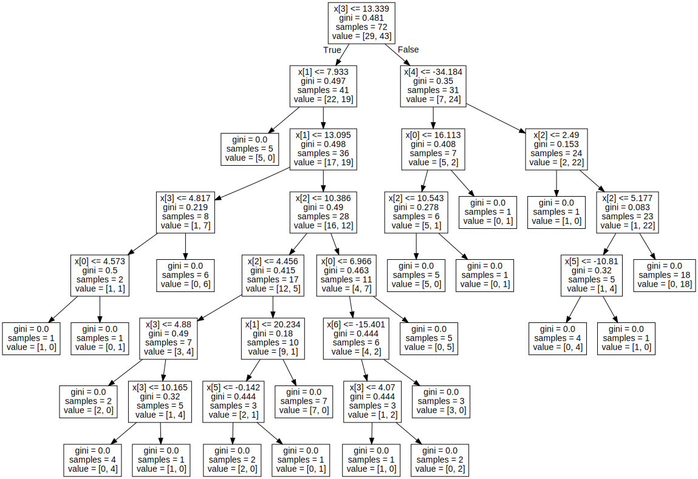
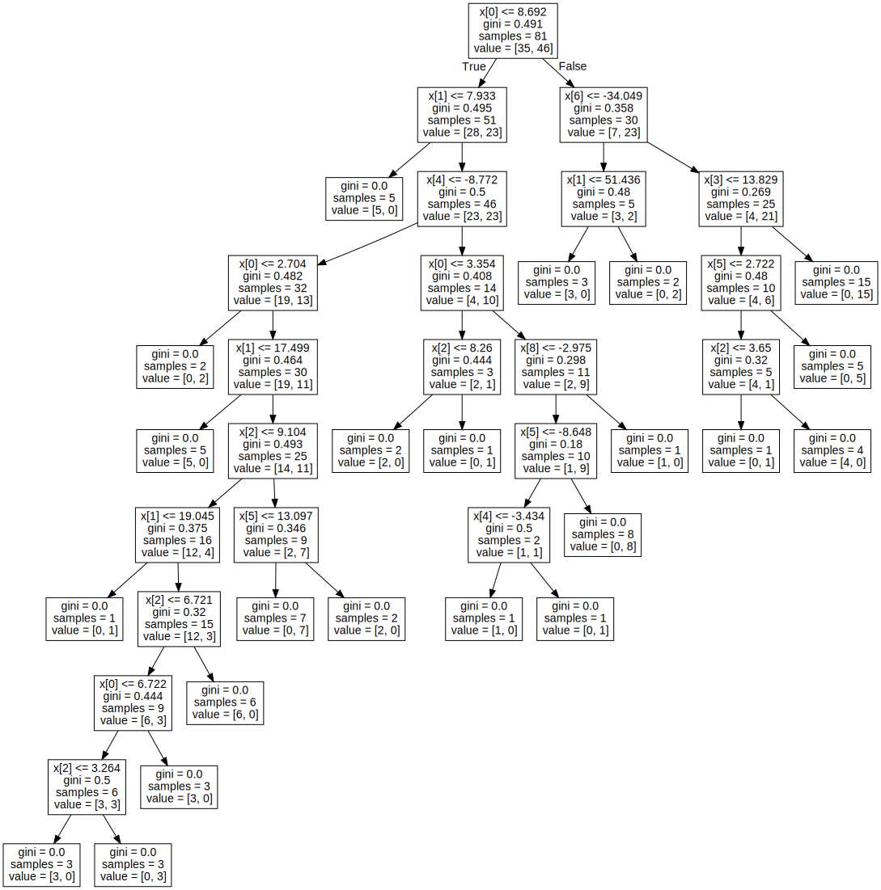

SOAL UTS#
Klasifikasi data menggunakan metode Naive Bayes
Klasifikasi data menggunakan Desision Tree
metode Naive Bayes#
# import library yang diperlukan
import pandas as pd
import math
import matplotlib.pyplot as plt
import numpy as np
# Importing the dataset
iris = pd.read_csv('https://raw.githubusercontent.com/FajarAndrianto037/data/main/dataR2.csv')
#looking at the first 5 values of the dataset
iris.head()
| Age | BMI | Glucose | Insulin | HOMA | Leptin | Adiponectin | Resistin | MCP.1 | Classification | |
|---|---|---|---|---|---|---|---|---|---|---|
| 0 | 48 | 23.500000 | 70 | 2.707 | 0.467409 | 8.8071 | 9.702400 | 7.99585 | 417.114 | 1 |
| 1 | 83 | 20.690495 | 92 | 3.115 | 0.706897 | 8.8438 | 5.429285 | 4.06405 | 468.786 | 1 |
| 2 | 82 | 23.124670 | 91 | 4.498 | 1.009651 | 17.9393 | 22.432040 | 9.27715 | 554.697 | 1 |
| 3 | 68 | 21.367521 | 77 | 3.226 | 0.612725 | 9.8827 | 7.169560 | 12.76600 | 928.220 | 1 |
| 4 | 86 | 21.111111 | 92 | 3.549 | 0.805386 | 6.6994 | 4.819240 | 10.57635 | 773.920 | 1 |
#Spliting the dataset in independent and dependent variables
X = iris.iloc[:,:4].values
y = iris['Classification'].values
# Splitting the dataset into the Training set and Test set
from sklearn.model_selection import train_test_split
X_train, X_test, y_train, y_test = train_test_split(X, y, test_size = 0.20, random_state = 82)
# Feature Scaling to bring the variable in a single scale
from sklearn.preprocessing import StandardScaler
sc = StandardScaler()
X_train = sc.fit_transform(X_train)
X_test = sc.transform(X_test)
# Fitting Naive Bayes Classification to the Training set with linear kernel
from sklearn.naive_bayes import GaussianNB
nvclassifier = GaussianNB()
nvclassifier.fit(X_train, y_train)
GaussianNB()In a Jupyter environment, please rerun this cell to show the HTML representation or trust the notebook.
On GitHub, the HTML representation is unable to render, please try loading this page with nbviewer.org.
GaussianNB()
# Predicting the Test set results
y_pred = nvclassifier.predict(X_test)
print(y_pred)
[1 1 1 1 1 1 2 1 1 2 1 1 1 1 1 1 1 2 1 1 1 1 2 2]
#lets see the actual and predicted value side by side
y_compare = np.vstack((y_test,y_pred)).T
#actual value on the left side and predicted value on the right hand side
#printing the top 5 values
y_compare[:5,:]
array([[2, 1],
[1, 1],
[2, 1],
[2, 1],
[1, 1]])
# Making the Confusion Matrix
from sklearn.metrics import confusion_matrix
cm = confusion_matrix(y_test, y_pred)
print(cm)
[[10 1]
[ 9 4]]
#finding accuracy from the confusion matrix.
a = cm.shape
corrPred = 0
falsePred = 0
for row in range(a[0]):
for c in range(a[1]):
if row == c:
corrPred +=cm[row,c]
else:
falsePred += cm[row,c]
print('Correct predictions: ', corrPred)
print('False predictions', falsePred)
print ('\n\nAccuracy of the Naive Bayes Clasification is: ', corrPred/(cm.sum()))
Correct predictions: 14
False predictions 10
Accuracy of the Naive Bayes Clasification is: 0.5833333333333334
Metode Desision Tree#
import pandas as pd
import numpy as np
from sklearn.datasets import load_iris
from sklearn.metrics import accuracy_score
import seaborn as sns
# Importing the dataset
iris = pd.read_csv('https://raw.githubusercontent.com/FajarAndrianto037/data/main/dataR2.csv')
iris.info()
<class 'pandas.core.frame.DataFrame'>
RangeIndex: 116 entries, 0 to 115
Data columns (total 10 columns):
# Column Non-Null Count Dtype
--- ------ -------------- -----
0 Age 116 non-null int64
1 BMI 116 non-null float64
2 Glucose 116 non-null int64
3 Insulin 116 non-null float64
4 HOMA 116 non-null float64
5 Leptin 116 non-null float64
6 Adiponectin 116 non-null float64
7 Resistin 116 non-null float64
8 MCP.1 116 non-null float64
9 Classification 116 non-null int64
dtypes: float64(7), int64(3)
memory usage: 9.2 KB
iris['Insulin&Leptin_diff'] = iris['Insulin']-iris['Leptin']
iris['Adiponectin&Resistin_diff'] = iris['Adiponectin']-iris['Resistin']
iris['Insulin&Leptin_len_diff'] = iris['Insulin']-iris['Leptin']
iris['Adiponectin&Resistin_width_diff'] = iris['Adiponectin']-iris['Resistin']
iris['Insulin&Leptin_len_wid_diff'] = iris['Insulin']-iris['Leptin']
iris['Adiponectin&Resistin_wid_len_diff'] = iris['Adiponectin']-iris['Resistin']
iris
| Age | BMI | Glucose | Insulin | HOMA | Leptin | Adiponectin | Resistin | MCP.1 | Classification | Insulin&Leptin_diff | Adiponectin&Resistin_diff | Insulin&Leptin_len_diff | Adiponectin&Resistin_width_diff | Insulin&Leptin_len_wid_diff | Adiponectin&Resistin_wid_len_diff | |
|---|---|---|---|---|---|---|---|---|---|---|---|---|---|---|---|---|
| 0 | 48 | 23.500000 | 70 | 2.707 | 0.467409 | 8.8071 | 9.702400 | 7.99585 | 417.114 | 1 | -6.1001 | 1.706550 | -6.1001 | 1.706550 | -6.1001 | 1.706550 |
| 1 | 83 | 20.690495 | 92 | 3.115 | 0.706897 | 8.8438 | 5.429285 | 4.06405 | 468.786 | 1 | -5.7288 | 1.365235 | -5.7288 | 1.365235 | -5.7288 | 1.365235 |
| 2 | 82 | 23.124670 | 91 | 4.498 | 1.009651 | 17.9393 | 22.432040 | 9.27715 | 554.697 | 1 | -13.4413 | 13.154890 | -13.4413 | 13.154890 | -13.4413 | 13.154890 |
| 3 | 68 | 21.367521 | 77 | 3.226 | 0.612725 | 9.8827 | 7.169560 | 12.76600 | 928.220 | 1 | -6.6567 | -5.596440 | -6.6567 | -5.596440 | -6.6567 | -5.596440 |
| 4 | 86 | 21.111111 | 92 | 3.549 | 0.805386 | 6.6994 | 4.819240 | 10.57635 | 773.920 | 1 | -3.1504 | -5.757110 | -3.1504 | -5.757110 | -3.1504 | -5.757110 |
| ... | ... | ... | ... | ... | ... | ... | ... | ... | ... | ... | ... | ... | ... | ... | ... | ... |
| 111 | 45 | 26.850000 | 92 | 3.330 | 0.755688 | 54.6800 | 12.100000 | 10.96000 | 268.230 | 2 | -51.3500 | 1.140000 | -51.3500 | 1.140000 | -51.3500 | 1.140000 |
| 112 | 62 | 26.840000 | 100 | 4.530 | 1.117400 | 12.4500 | 21.420000 | 7.32000 | 330.160 | 2 | -7.9200 | 14.100000 | -7.9200 | 14.100000 | -7.9200 | 14.100000 |
| 113 | 65 | 32.050000 | 97 | 5.730 | 1.370998 | 61.4800 | 22.540000 | 10.33000 | 314.050 | 2 | -55.7500 | 12.210000 | -55.7500 | 12.210000 | -55.7500 | 12.210000 |
| 114 | 72 | 25.590000 | 82 | 2.820 | 0.570392 | 24.9600 | 33.750000 | 3.27000 | 392.460 | 2 | -22.1400 | 30.480000 | -22.1400 | 30.480000 | -22.1400 | 30.480000 |
| 115 | 86 | 27.180000 | 138 | 19.910 | 6.777364 | 90.2800 | 14.110000 | 4.35000 | 90.090 | 2 | -70.3700 | 9.760000 | -70.3700 | 9.760000 | -70.3700 | 9.760000 |
116 rows × 16 columns
from sklearn import tree
import graphviz
from sklearn.tree import DecisionTreeClassifier
from sklearn.model_selection import train_test_split, cross_val_score
# memisahkan variable independen dan variable target dari data iris
x = iris[['Insulin', 'Leptin', 'Adiponectin', 'Resistin', 'Insulin&Leptin_diff','Adiponectin&Resistin_diff', 'Insulin&Leptin_len_diff', 'Adiponectin&Resistin_width_diff', 'Insulin&Leptin_len_wid_diff', 'Adiponectin&Resistin_wid_len_diff']]
y = iris['Classification']
# sebelum melatih model kota split data kita dulu kedalam data train dan data test untuk tujuan validasi
Xtrain, Xtest, Ytrain, Ytest = train_test_split(x,y, test_size=0.30, random_state=42)
# split data ke validasi train dan validasi test
Xt, Xcv, Yt, Ycv = train_test_split(Xtrain, Ytrain, test_size=0.10, random_state=42)
# membuat decision tree clasifikasi dan melatihnya dengan training dataset
iris_clf = DecisionTreeClassifier(criterion='gini', min_samples_split=2)
iris_clf.fit(Xt,Yt)
# visualisasi tree berdasarkan train dataset
dot_data = tree.export_graphviz(iris_clf, out_file=None)
graph = graphviz.Source(dot_data)
graph

# cek validasi test data pada training model dan mendapatkan peforma matriks
from sklearn.metrics import multilabel_confusion_matrix, accuracy_score
Y_hat = iris_clf.predict(Xcv)
print('Accuracy sccore for validation test is: ',accuracy_score(Ycv, Y_hat))
multilabel_confusion_matrix(Ycv, Y_hat)
Accuracy sccore for validation test is: 0.5555555555555556
array([[[3, 0],
[4, 2]],
[[2, 4],
[0, 3]]])
YT_hat = iris_clf.predict(Xtest)
YT_hat
print("model accuracy score on totally unseen data(Xtest) is:",accuracy_score(Ytest, YT_hat)*100,'%')
multilabel_confusion_matrix(Ytest, YT_hat)
model accuracy score on totally unseen data(Xtest) is: 62.857142857142854 %
array([[[12, 6],
[ 7, 10]],
[[10, 7],
[ 6, 12]]])
iris_Fclf = DecisionTreeClassifier(criterion='gini', min_samples_split=2)
iris_Fclf.fit(Xtrain, Ytrain)
# visualisasi tree berdasarkan train dataset
dot_data = tree.export_graphviz(iris_Fclf, out_file=None)
graph = graphviz.Source(dot_data)
graph

YT_FHat = iris_Fclf.predict(Xtest)
YT_FHat
print("model accuracy score on totally unseen data(Xtest) is:",accuracy_score(Ytest, YT_FHat)*100,'%')
model accuracy score on totally unseen data(Xtest) is: 42.857142857142854 %